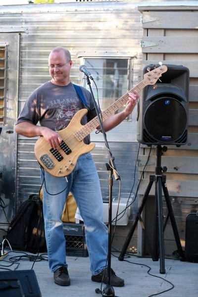

About Me

Having fun at my other job
My life, both personal and professional, has been a mostly continuous flow of good fortune. I was born with aptitudes in mathematics, music and things mechanical. As a NJ teenager, I fortuitously connected with a generous electrical engineer at Bell Labs that introduced me to computer programming. That introduction was sufficient for me to know what I wanted to study and do professionally. Looking back, it's clear that many of us at 17 years old were effectively forced to pick a field of study without knowing what we wanted to become. I was very lucky to feel sure I wanted to be a software engineer.
My professional experience includes:
- Linux
- Ruby on Rails
- Java